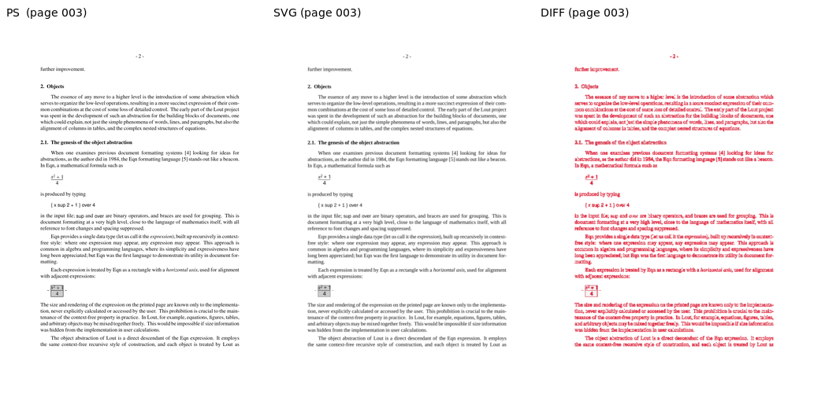
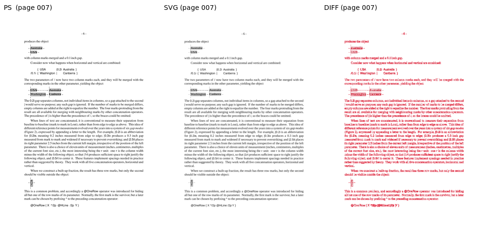
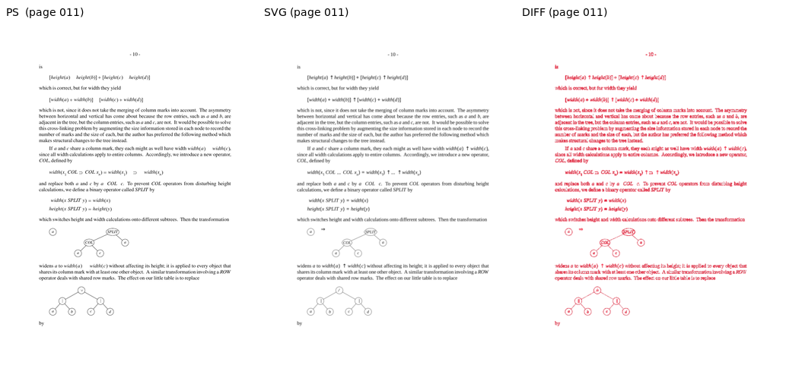
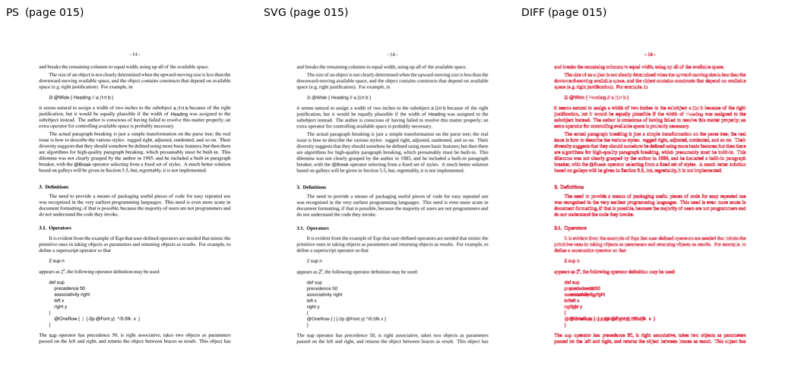
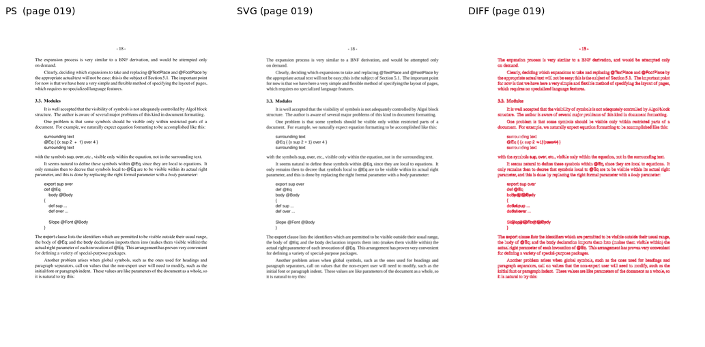
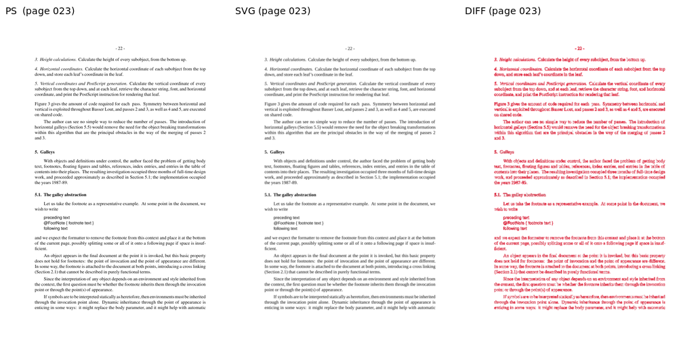
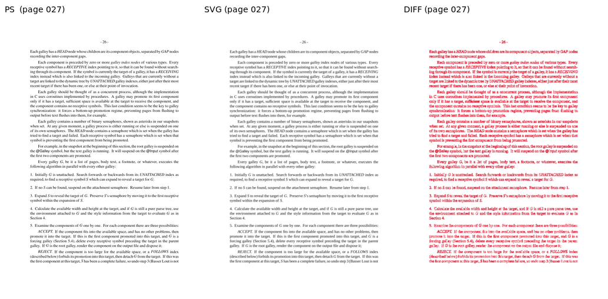
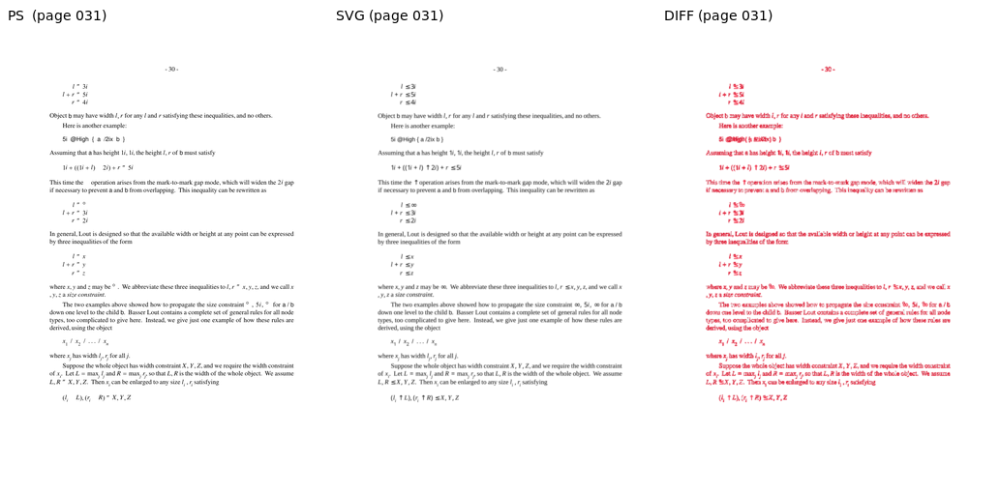
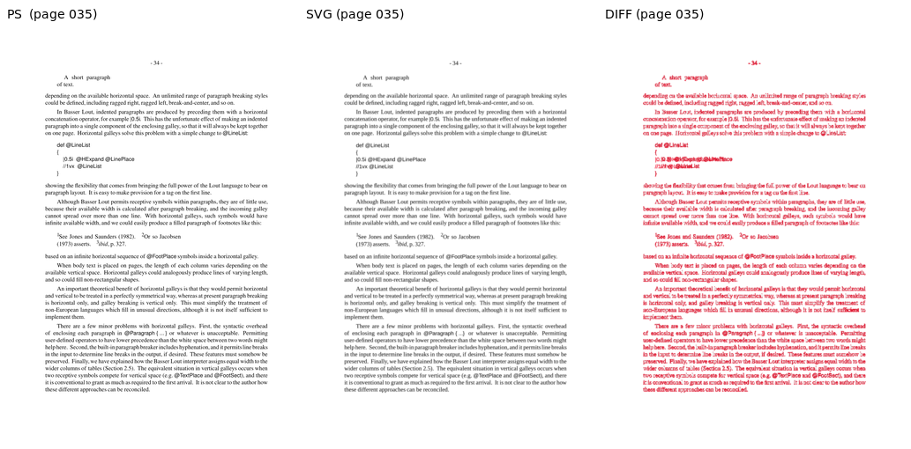
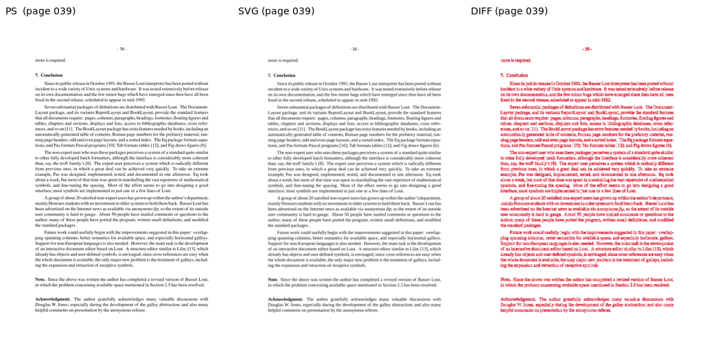

Sampled pages, rendered via both the PostScript pipeline (lout + ps2pdf + pdftoppm) and the SVG pipeline (lout -G via z53.c + rsvg-convert). AE = ImageMagick absolute-error pixel count at 5% fuzz; SSIM is scikit-image structural_similarity on luminance (1.0 = identical).
| Page | W | H | Diff px | Diff % | SSIM | Verdict |
|---|---|---|---|---|---|---|
| 003 | 827 | 1170 | 80870 | 8.36 | 0.9085 | DIFF |
| 007 | 827 | 1170 | 85302 | 8.82 | 0.9324 | DIFF |
| 011 | 827 | 1170 | 52548 | 5.43 | 0.9527 | DIFF |
| 015 | 827 | 1170 | 82899 | 8.57 | 0.9023 | DIFF |
| 019 | 827 | 1170 | 71199 | 7.36 | 0.9177 | DIFF |
| 023 | 827 | 1170 | 83810 | 8.66 | 0.9515 | DIFF |
| 027 | 827 | 1170 | 114324 | 11.82 | 0.8846 | DIFF |
| 031 | 827 | 1170 | 43103 | 4.45 | 0.9577 | OK |
| 035 | 827 | 1170 | 96914 | 10.02 | 0.9270 | DIFF |
| 039 | 827 | 1170 | 123020 | 12.71 | 0.8667 | DIFF |









